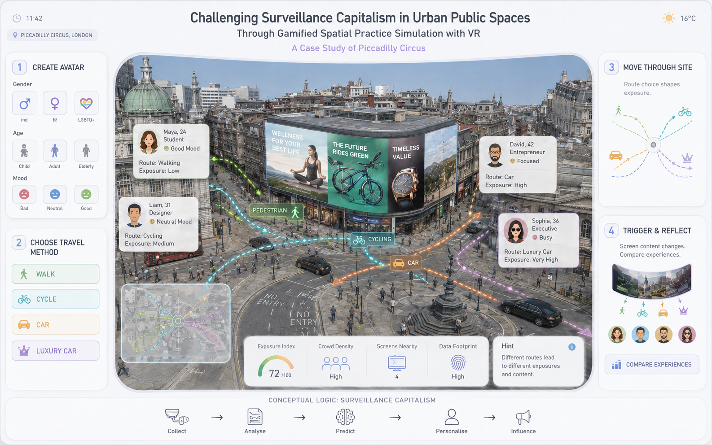
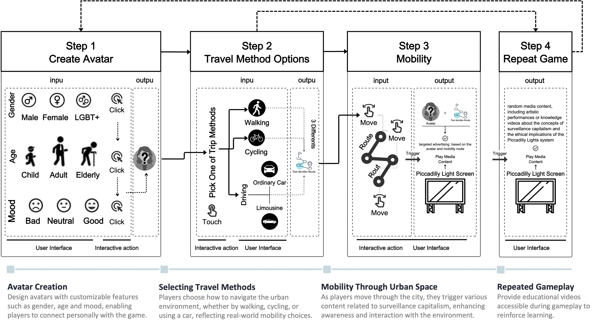
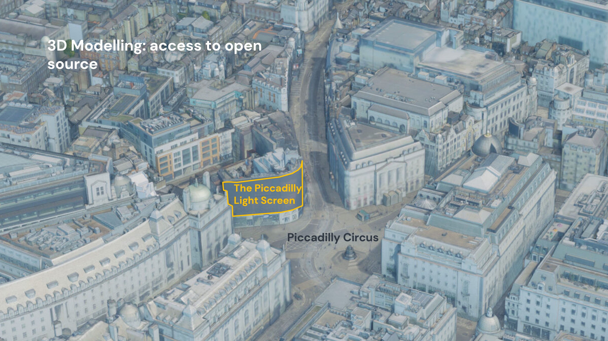

The Piccadilly Light
Challenging Surveillance Capitalism in Urban Public Spaces Through Gamified Spatial Practice Simulation with Virtual Reality
Problem
Hidden audience-sensing systems turn a public square into a targeted advertising interface.
Design Response
A Unity-based VR simulation where the player's avatar triggers targeted screen content.
Tools: Unity, VR workflow, 3D modelling, spatial scenario design, critical media-architecture research.

Piccadilly Circus as a case study in urban screen surveillance.
The Piccadilly Light examines the iconic Piccadilly Lights screen in London as a public urban interface shaped by advertising, hidden camera sensors, and data-driven audience classification. The project responds to the quiet expansion of surveillance capitalism from online platforms into physical public space.
Rather than presenting surveillance as an abstract policy concern, the work translates it into an embodied VR experience. Players move through a simulated Piccadilly Circus, create avatars, choose travel methods, and encounter screen content that changes in response to their demographic and mobility choices.
A playable model of targeted urban media.
The VR prototype turns surveillance capitalism into a spatial practice simulation. The player builds an avatar, chooses a mobility mode, moves through the site, and triggers media content on urban screens. Each route and identity profile produces a different exposure scenario, making the politics of targeted media tangible.
Repeated play shifts the experience from simulation to critique: screen content changes from commercial targeting toward knowledge prompts and critical reflection, helping players compare how public space, advertising, mobility, and data collection interact.
The four-step flow: avatar, mobility, urban screen trigger, repeat game.
The game flow is designed as a compact learning sequence. Each step exposes a different layer of the surveillance system, from identity construction and mobility tracking to screen response and reflective replay.

1. Create Avatar
Players select gender, age, and mood to test how identity categories shape targeted content.
2. Choose Travel
Walking, cycling, car, and luxury car options create different exposure routes.
3. Move Through Site
The avatar traverses the digital twin of Piccadilly Circus and triggers the screen system.
4. Repeat & Reflect
Replay reveals how media content changes, inviting comparison and critical awareness.
A digital twin that reveals invisible public-space data practices.
The simulation uses a 3D model of Piccadilly Circus to stage interactions that are normally hidden within the built environment. By making data collection, targeting logic, and screen response visible, the project reframes VR as a civic literacy tool.
The work positions gamified spatial practice as a method for discussing urban rights, privacy, commercial media systems, and the publicness of smart-city infrastructure.
Read ASCAAD Paper
From passive audience to informed participant.
The Piccadilly Light proposes a design method for translating complex socio-technical systems into immersive, playable experience. In doing so, it helps users understand how urban screen surveillance operates and how public spaces can be reimagined as sites of agency, critique, and informed participation.
Back to Digital Arts